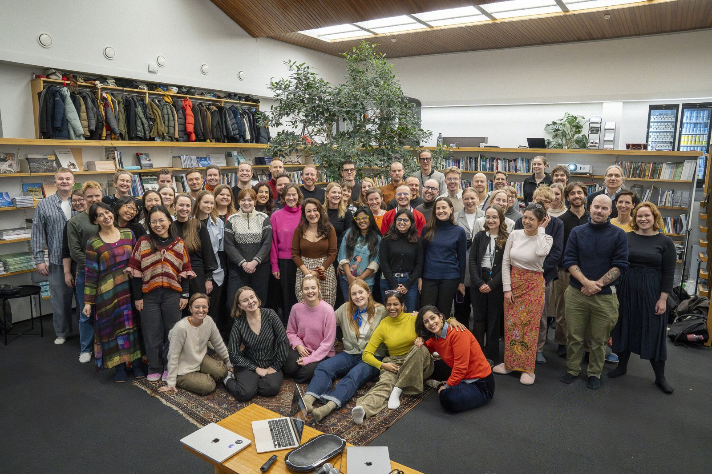

consulting

Since 2020, I work with independent think tank Demos Helsinki on a range of consulting projects supporting institutional change in public governance. While working on domains as diverse as development and social services, my main area of expertise is industrial and innovation policy.
Previous collaborations include governments and public agencies (Finland, Sweden, UK, European Commission), philanthropies (Laudes, Bloomberg), private companies (Meta), NGOs (Housing First Europe Hub).
Types of projects include:
- keynotes
- tailored training programmes
- policy analysis and evaluation
- systems mapping reports
- interactive workshops
- narrative pieces
- white papers
Below you can find a selection of publications emerged from these activities.
- reportDemos Helsinki (2023). Towards experimentalist R&I funding. Report for the Swedish Innovation Agency FORMAS. November 2023. Link
- white paperDemos Helsinki (2023). A new ethos for the civil service: From bureaucrats to agents of governance. October 2023. PDF
- white paperDemos Helsinki (2022). Missions for governance: Unleashing missions beyond policy. November 2022. Link
- reportDemos Helsinki (2022). A new systems perspective to ending homelessness. Report for the Housing First Europe Hub. June 2022. Link
- reportDemos Helsinki (2021). Turning the tide: Landscape analysis of a new economic movement in Europe. Report for Laudes Foundation. December 2021. Link
- white paperDemos Helsinki (2021). A call for humble governments: How to overcome gridlocks in liberal democracies. June 2021. Link